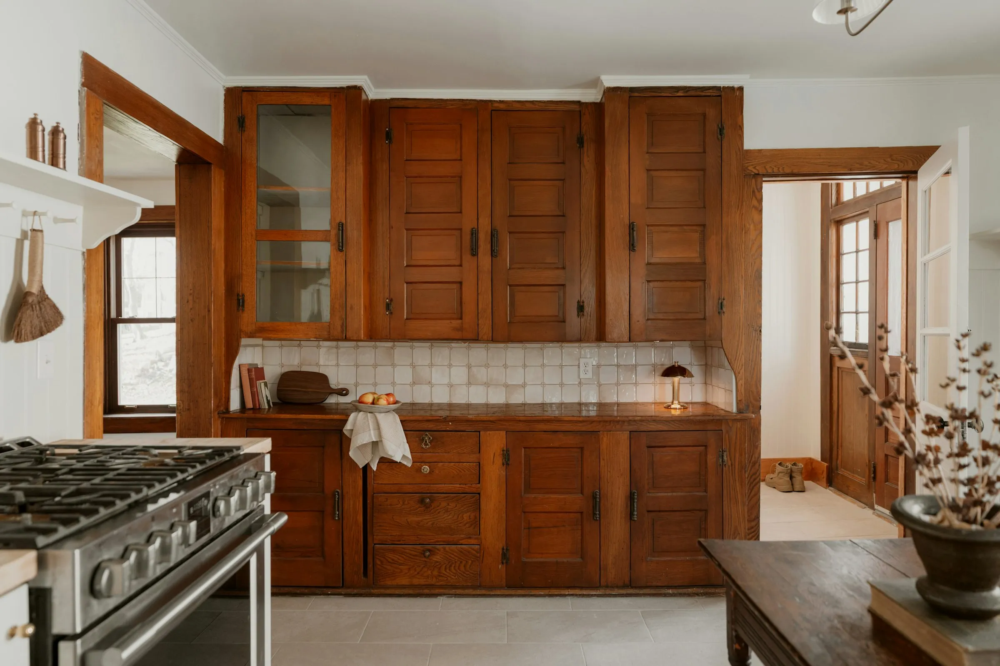
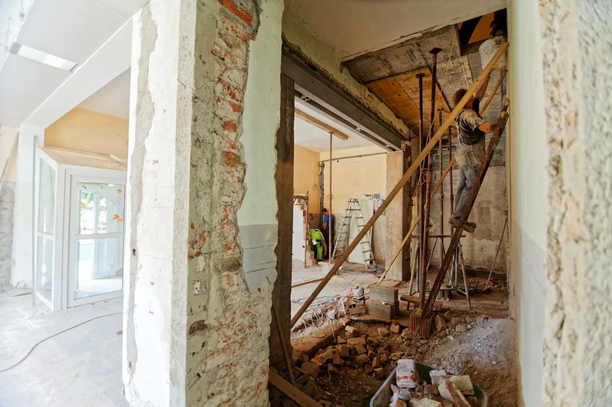
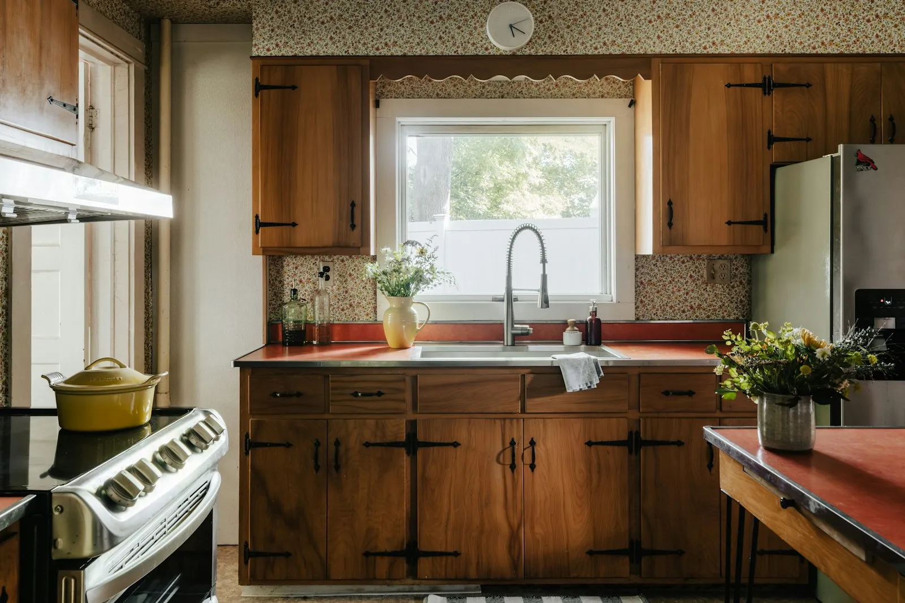
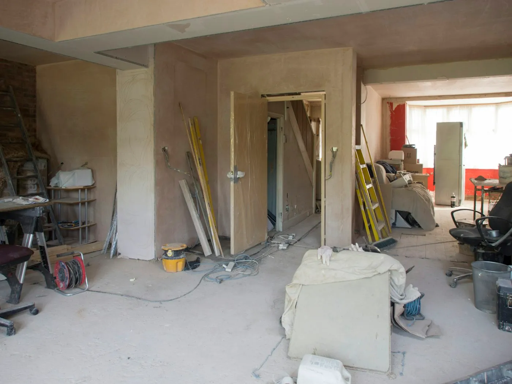
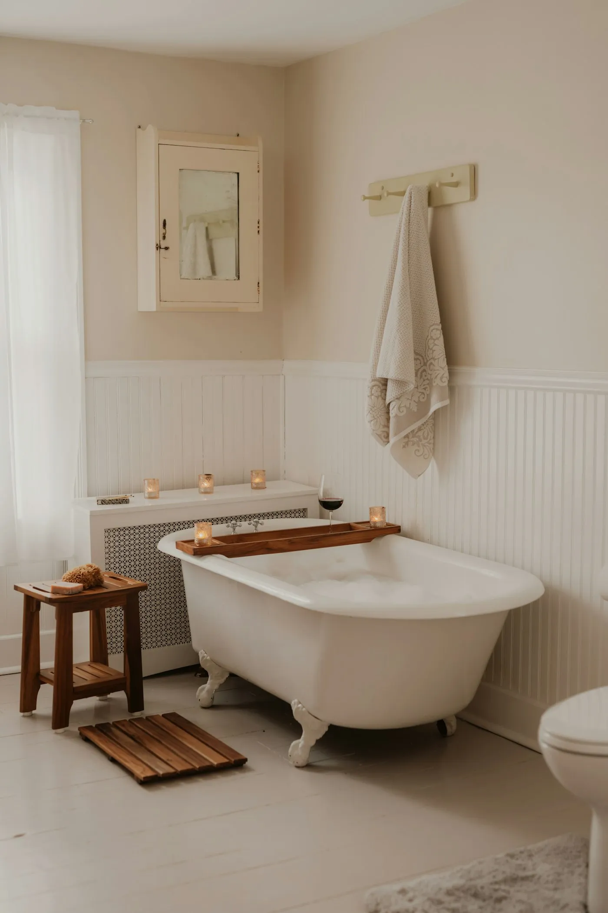
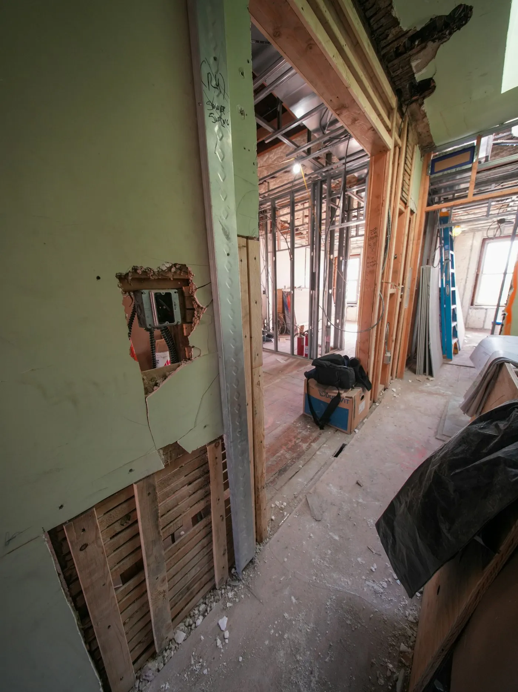
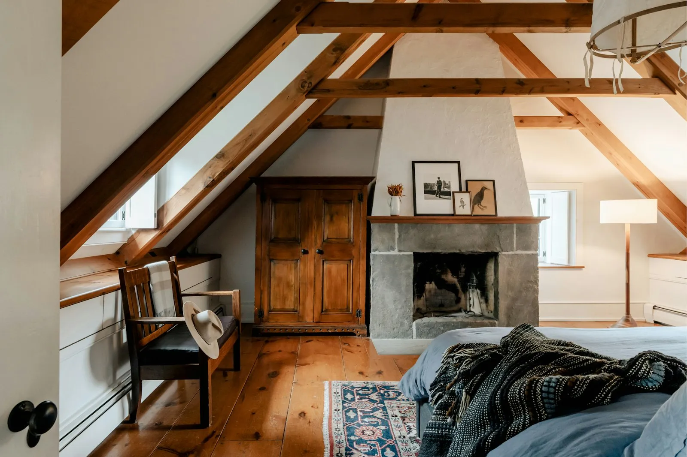
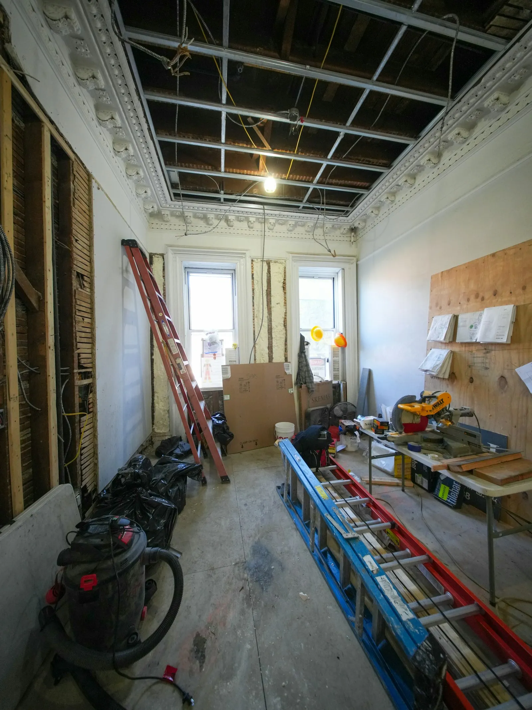
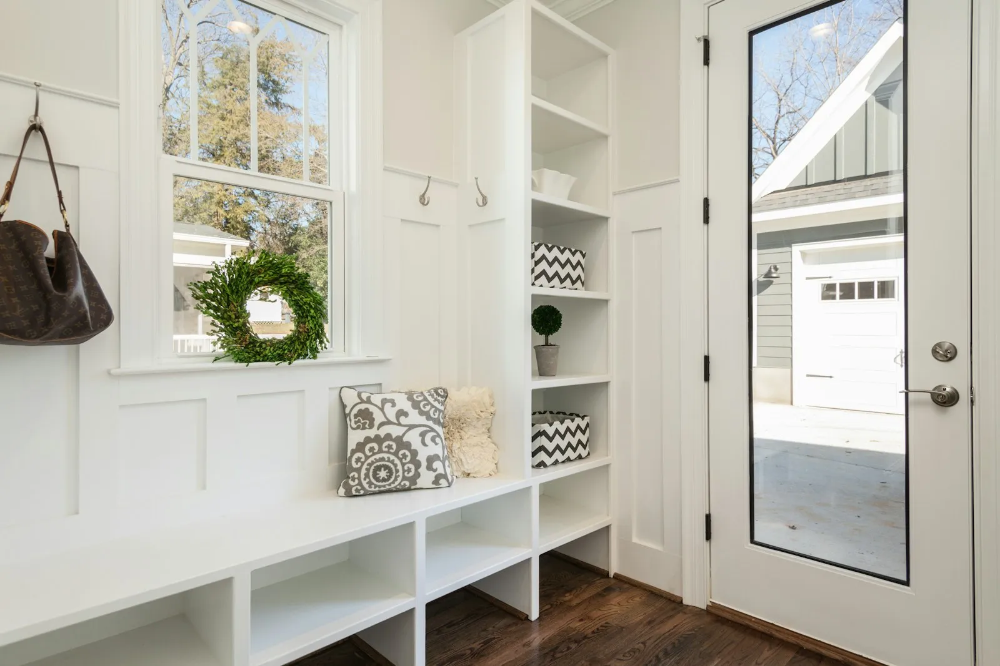
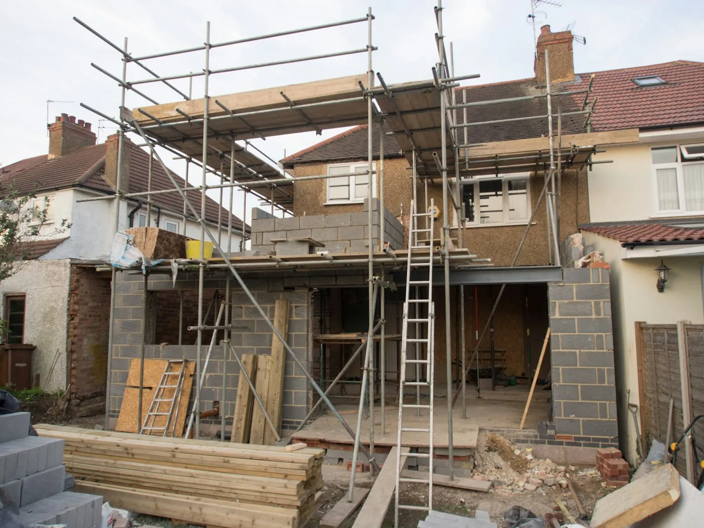

Every job is named for its neighborhood and the year the house was built, and every one shows the house mid-build.
Built 1911 · $96,000 · 10 weeks
We stripped and kept the original oak cabinets, then built new ones to match around a range that finally fits.


Built 1948 · $71,000 · 9 weeks
Walnut cabinets with iron hinges, a red counter the owners chose themselves, and new plaster where the old soffit came down.


Built 1912 · $36,000 · 6 weeks
The clawfoot tub stayed. Everything around it is new: beadboard, a heated floor and plumbing that won’t freeze in January.


Built 1926 · $92,000 · 12 weeks
An unused attic became a bedroom with the rafters left open, a new dormer for headroom and insulation that keeps it warm.


Built 1922 · $58,000 · 8 weeks
A small addition off the back door: a bench, a hook for every coat and a floor that takes Minnesota winters.

